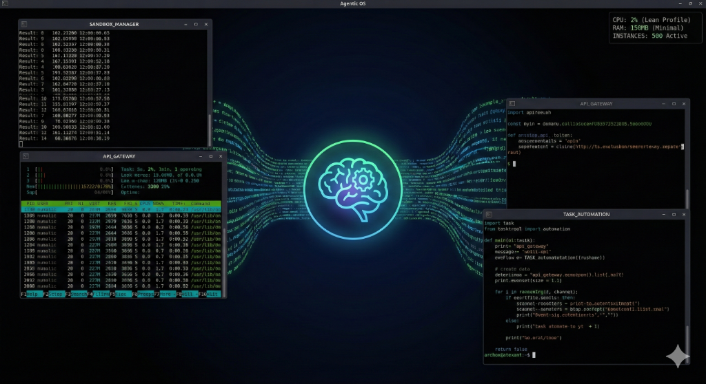

For decades, the open-source world has asked: “Is this finally the year of the Linux desktop?” For actual humans, the answer always seemed to be “not quite”—until now. The catch? Linux desktops have finally conquered the world… but as the home turf of AI agents, not people.
Yes, in the age of superagents—digital workers like OpenAI’s Agent Mode, Manus, TARS, and more—the Linux desktop is having its victory lap. It’s just that the new users don’t need a mouse, a coffee, or a standing desk. They’re AI, and they’ve found their perfect desktop home.
The Linux Paradox: Invisible Power, Visible Absence
To understand why this is such a plot twist, you need to appreciate the paradox of Linux: it is everywhere and nowhere.
- Linux is the invisible backbone of the internet: It runs the majority of the world’s servers, powers almost every major website, and forms the core of cloud giants like AWS, Google Cloud, and Azure.
- Supercomputing? It’s Linux. Over 95% of the world’s fastest supercomputers run on Linux.
- The Cloud? Linux runs the show. Most virtual machines spun up in the cloud are Linux. When companies deploy at scale, it’s always Linux under the hood.
- Your phone? That’s Linux, too. Android, the world’s most popular mobile OS, is built on the Linux kernel.
But despite dominating everywhere else, Linux has always been the underdog on the personal desktop. Windows reigns supreme in homes, schools, and businesses. macOS has its loyal fanbase. For the average computer user, the “Linux desktop” is barely visible—unless you’re a developer, a sysadmin, or an academic.
The Dream Deferred: Waiting for the Year of the Linux Desktop
Ask any Linux enthusiast: The “Year of the Linux Desktop” is practically a meme.
- For 25+ years, advocates believed that any day now, Linux would become the OS of choice for everyone—more stable, more secure, more customizable.
- In reality? Despite huge popularity with developers, hackers, and researchers—and legendary status in universities—Linux never quite broke through with the masses.
- Mainstream adoption always seemed just out of reach, blocked by hardware compatibility, proprietary software, gaming, and the inertia of the Windows world.
Yet the dream never died. Conferences, blogs, and podcasts would regularly ask: “Is this finally the year?” The answer, year after year, was “not quite.”
Why AI Agents Choose Linux (And Why Proprietary OSes Are Left Behind)
The reason for this shift isn’t just hype, or tradition, or even ideology. It comes down to fundamental technical and economic advantages:
1. Open Source, Open World
- No licensing fees. No legal headaches. Linux is free at any scale. Spin up 10,000 desktops for agents in the cloud? Nobody’s sending you a bill.
- Hackable by design: Agents (and their creators) can inspect, modify, or automate any part of the stack, from kernel to GUI. Proprietary OSes simply can’t compete here.
- Infinite extensibility: If a tool or feature doesn’t exist, you can build it—or the agent can.
2. Cloud Supremacy
- Linux dominates the cloud. Every major cloud provider (AWS, GCP, Azure) is optimized for Linux VMs, containers, and orchestration.
- Need to instantly deploy isolated, secure desktops for thousands of agents? Linux is already the backbone.
- No OS is as “cloud native” as Linux. Licensing for Windows VMs is slow, costly, and restrictive. macOS is barely available outside Apple’s hardware.
3. Customizability, Speed, and Lean Performance
- Ultra-customizable: Want a barebones, lightning-fast desktop that boots in seconds and only runs what you need? Linux is built for that.
- No bloat: Agents don’t care for Cortana, Siri, or animated emojis. Linux offers minimalism and raw speed.
- Fast to spin, low latency: The agentic revolution depends on spinning up and tearing down environments in milliseconds. Linux delivers this with tiny disk images, lean memory profiles, and true headless operation.
4. Proven Automation & Scriptability
- Automation is native: Agents can automate GUIs, file systems, networking, and even the kernel itself, using decades-old, battle-tested scripting and API frameworks.
- Stable accessibility layers and automation tools: From DBus to ATK, everything’s accessible, scriptable, and open.
The Rise of AI-Ready Linux Distros: The Agentic OS Revolution
The landscape is evolving so quickly that now specialized Linux distributions are being purpose-built for AI agents themselves—ushering in a new era of the “Agentic OS”.

Archon OS is a leading example: an ultra-lean, AI-native Linux distribution designed from the ground up for agentic use. Archon OS boots in seconds, offers tightly sandboxed environments, and comes pre-equipped with all the APIs and automation tools that superagents demand—no onboarding, no distractions, no bloat.
- It’s not about user-friendliness; it’s about agent-efficiency.
- With secure, ephemeral sandboxes, these distros enable agents to safely spawn, destroy, and scale their own workspaces—hundreds or thousands at a time.
Other spins and projects are following: headless Ubuntu, container-native Debian, cloud-tuned agent images, and more.
These new “Agent OSes” are optimized not for human workflows, but for machine-to-machine automation and agentic orchestration.
Just as Ubuntu and Mint made Linux friendlier for people, Archon OS and its siblings are making Linux frictionless for AI agents. The Agentic OS genre has officially arrived.
The Rise of Superagents: Manus, TARS, and Beyond
2025 isn’t the year of the human Linux desktop. It’s the year of the agentic Linux desktop—the cloud-powered sandbox where AI agents thrive.
Who are these new digital power-users?
OpenAI Agent Mode / Operator
Runs its own Linux desktop-in-the-cloud, controlling Chrome, LibreOffice, files, and more. Completes multi-step tasks like downloading, editing, and moving documents with no human clicks required.
Anthropic’s Claude with Computer Use
Uses Linux sandboxes for visual and API-driven automation, with full access to manipulate GUIs and files.
Manus.im
An open-source, agentic “operating system” for AI agents. Manus spins up dedicated Linux environments so any LLM can automate apps, run workflows, and interact with real software—at scale and at speed.
TARS
A generalist superagent inspired by sci-fi, TARS runs in containerized Linux desktops, mastering browsers, spreadsheets, and even legacy apps, all within secure, reproducible Linux VMs.
Other Players & Ecosystem Tools
- ScreenEnv: Open-source project building virtual Ubuntu desktops for AI agent testing, safely and at scale.
- Linux Foundation Agent Gateway: Building standards for cross-agent, cross-app Linux integration.
- Academic Projects (ComputerRL, SchedCP): Advancing agentic automation and reinforcement learning inside Linux GUIs and systems.
What Does This Mean for Desktop Apps on Linux?
If you make desktop software for Linux, your most active users soon may not be people, but agents.
A New Kind of “User”:
- Automation is king: Agents demand robust APIs, headless modes, and stable scripting. If your app can’t be reliably automated, it will be left behind.
- Accessibility and stability matter: UI elements must be predictable and well-exposed. Fragile GUI automation is a dealbreaker.
- Security and sandboxing: Agents need just enough access, never more. Fine-grained permissions and logs are now basic hygiene.
- Native support is a must: Apps with flaky Linux ports will be abandoned for native alternatives, or for open-source clones.
UX for Agents (Not Humans):
- Apps may expose semantic, task-based APIs (“generate a report from these files”) instead of just GUI-driven interfaces.
- Logging, feedback, and “undo” support will be crucial for auditing and safety.
The App Developer’s Dilemma:
How do you test your app for agents? Start thinking about CI pipelines where your “user” is an AI agent running inside a Linux sandbox!
The Surprise Boon for Linux Apps: LibreOffice, GIMP, Inkscape & Beyond
Ironically, the new era of agentic Linux desktops could be the best thing that’s ever happened to open source desktop apps.

LibreOffice is now being used by agents as a workhorse for document generation, editing, and automation at unprecedented scale—not just by humans writing essays, but by superagents assembling reports, forms, and knowledge bases around the clock.
- Every day, LibreOffice Writer, Calc, and Impress are being driven to their limits, automating tasks faster and at greater volume than most human users ever could.
- Agents’ demands are relentless and uncompromising. Even minor bugs, clunky behaviors, or slow performance become immediate bottlenecks at scale—forcing rapid iteration, bugfixes, and quality improvements.
Other Linux apps, too—like Inkscape, GIMP, and countless writing and workflow tools—are getting a second life.
- Agents use GIMP and Inkscape for image generation, conversion, and batch-editing; text tools for automated content creation and formatting.
- Tools that may have lagged behind their proprietary Windows/macOS counterparts are now being “battle-tested” by AI. The “good enough” bar is rising—agents are discovering edge cases, pushing APIs, and exposing bugs that would otherwise stay hidden.
- As agents become power users, open source app developers are gaining new telemetry, feedback, and bug reports at a rate never seen before.
What does this mean? The “AI desktop” could spark an unprecedented renaissance for Linux desktop apps. With agents pushing, breaking, and improving these tools at scale, we may finally see LibreOffice, GIMP, Inkscape and other stalwarts close the gap with (or even leapfrog) proprietary software—not for human polish, but for raw reliability, scriptability, and automation.
Why Not Windows or Mac?
The short version:
- Windows and macOS are locked-down, expensive, and bloated.
- License fees, restrictive virtualization, slow boot times, proprietary protocols, and unpredictable updates all stand in the way of agentic automation.
- The cloud isn’t optimized for them, and neither are AI workflows.
Agents don’t want branding—they want freedom and speed.
The Future: The Decade of the Agentic Linux Desktop
From 2025 onward, expect:
- Agent-aware apps: Major Linux software will ship “agent mode” APIs and automation docs.
- Standardized agent protocols: Open standards (like Model Context Protocol) will make agentic workflows cross-app and cross-platform.
- Zero-trust security: Granular sandboxing and permissioning for all agent activities.
- Agent dashboards: Linux desktops will include visual management tools for agent workflows and activity logs.
- A new breed of distros: AI-ready, agent-optimized Linux OSes like Archon OS will become the “default” for cloud and automation-driven agent infrastructure.
The Year of the Linux Desktop Has Arrived… For AI
So, after decades of waiting, the Linux desktop finally wins—but not in the way anyone predicted. The new power-users are silent, fast, and relentless. They don’t need themes or wallpapers. They need access, speed, and infinite customization. And that’s exactly what Linux delivers.
For humans, the “year of the Linux desktop” is a meme. For AI agents—and for the distros being built just for them—it’s already a reality.
Want a deep dive on Archon OS, developer tips for agentic app design, or a launch thread? Let me know! This is only the beginning.